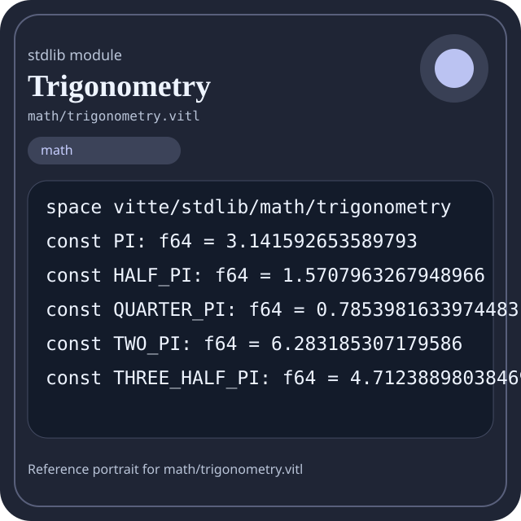

Stdlib module math/trigonometry.vitl
This page is a wiki-style reference for one concrete stdlib file. It explains what the file owns, where it fits in the family, and how to decide whether this is the right surface to depend on.

math/trigonometry.vitl.Family: math
Kind: public stdlib surface
Page style: this reference follows the same “encyclopedic card + portrait + usage contract” logic as the keyword pages, but for stdlib modules.
Summary
- Overview
- Purpose
- Taxonomy
- Implementation profile
- Top-level API inventory
- Position in family
- Declaration map
- Representative signatures
- How to use this module
- User example
- Keyword coverage
- Source shape
- Source landmarks
- Source organization
- Complete API catalog
- Integration boundaries
- Composition guidance
- Relationship table
- Neighbor modules
Overview
| Field | Value |
|---|---|
| Path | math/trigonometry.vitl |
| Family | math |
| Kind | public stdlib surface |
| Line count | 721 |
| Declared procedures | 86 |
| Declared forms/picks | 0 |
`math/trigonometry.vitl` is a public stdlib surface inside the `math` family. It should be read as one focused slice of the broader family responsibility: Arithmetic, algebra, comparison, calculus, geometry, modular arithmetic, number theory, probability, statistics, matrix, and vector helpers.
Purpose
This file should be chosen because of responsibility, not because its name “sounds close enough”. Inside the math family, it carries one focused part of the contract and keeps that responsibility separate from neighboring concerns.
- A scoring engine can compute aggregates in `math` while keeping I/O and transport elsewhere.
- A statistics or matrix chapter should explain the workflow around the computation, not just a single formula.
Taxonomy
Think of this page as a generated encyclopedia entry rather than a hand-written tutorial. The goal is to show what kind of module this is, how dense it is, and what reading strategy makes sense before depending on it.
- Large algorithm surface: this file exposes many procedures and likely acts as a domain toolkit rather than a single thin wrapper.
- Has tuning constants: part of the module behavior is controlled by named constants that document default precision, limits, or policy.
- Minimal top-level dependencies: the module reads as mostly self-contained from its opening declarations.
- Explicit export surface: the file ends with visible export declarations instead of relying only on implicit namespace discovery.
Implementation profile
This profile is inferred directly from the source text. It does not replace reading the file, but it tells you quickly whether the module is mostly declarative, loop-heavy, branch-heavy, or organized around many small exits.
| Signal | Count | What it suggests |
|---|---|---|
if | 55 | Branching density and local decision-making. |
while | 6 | Loop-heavy or iterative implementation style. |
for | 0 | Collection-style traversal at source level. |
match | 0 | Variant-driven branching or grammar-style decoding. |
let | 145 | Local state and intermediate value density. |
give | 138 | Number of explicit exit points and result shaping. |
Top-level API inventory
| Surface | Items |
|---|---|
| Procedures | abs_f64, min_f64, max_f64, clamp_f64, sign_f64, is_near_zero, normalize_degrees, normalize_radians, wrap_radians, degrees_to_radians, radians_to_degrees, opposite_angle |
| Forms | none declared at top level |
| Picks | none declared at top level |
| Constants | PI, HALF_PI, QUARTER_PI, TWO_PI, THREE_HALF_PI, DEG_TO_RAD, RAD_TO_DEG, EPSILON, SERIES_STEPS |
| Exports | * |
Imported surfaces
This file does not advertise a top-level `use` surface in its opening declarations. That often means it is either self-contained or an aggregation layer.
Position in family
This file is module 20 of 21 in the math family when ordered by path. By procedure count it ranks 2, and by line count it ranks 3. Those ranks are useful as rough signals of breadth, not as quality judgments.
Declaration map
The declaration map turns raw source into a scan-friendly catalog. It is useful when the file is large enough that a reader wants to orient by kinds of surfaces first.
| Line | Name | Kind | Role |
|---|---|---|---|
| 1 | vitte/stdlib/math/trigonometry | space | Declares the namespace that anchors this file in the stdlib tree. |
| 7 | PI | const | Defines a named constant reused across the module. |
| 8 | HALF_PI | const | Defines a named constant reused across the module. |
| 9 | QUARTER_PI | const | Defines a named constant reused across the module. |
| 10 | TWO_PI | const | Defines a named constant reused across the module. |
| 11 | THREE_HALF_PI | const | Defines a named constant reused across the module. |
| 12 | DEG_TO_RAD | const | Defines a named constant reused across the module. |
| 13 | RAD_TO_DEG | const | Defines a named constant reused across the module. |
| 14 | EPSILON | const | Defines a bound or precision constant that shapes runtime behavior. |
| 15 | SERIES_STEPS | const | Defines a named constant reused across the module. |
| 17 | abs_f64 | proc | Represents one top-level surface in the file contract and should be read as part of the module boundary. |
| 25 | min_f64 | proc | Represents one top-level surface in the file contract and should be read as part of the module boundary. |
| 33 | max_f64 | proc | Represents one top-level surface in the file contract and should be read as part of the module boundary. |
| 41 | clamp_f64 | proc | Represents one top-level surface in the file contract and should be read as part of the module boundary. |
| 51 | sign_f64 | proc | Implements a security-sensitive transformation in the crypto boundary. |
| 61 | is_near_zero | proc | Represents one top-level surface in the file contract and should be read as part of the module boundary. |
| 65 | normalize_degrees | proc | Represents one top-level surface in the file contract and should be read as part of the module boundary. |
| 78 | normalize_radians | proc | Represents one top-level surface in the file contract and should be read as part of the module boundary. |
| 91 | wrap_radians | proc | Represents one top-level surface in the file contract and should be read as part of the module boundary. |
| 99 | degrees_to_radians | proc | Represents one top-level surface in the file contract and should be read as part of the module boundary. |
| 103 | radians_to_degrees | proc | Represents one top-level surface in the file contract and should be read as part of the module boundary. |
| 107 | opposite_angle | proc | Represents one top-level surface in the file contract and should be read as part of the module boundary. |
| 112 | complement_angle | proc | Represents one top-level surface in the file contract and should be read as part of the module boundary. |
| 116 | supplement_angle | proc | Represents one top-level surface in the file contract and should be read as part of the module boundary. |
| 120 | angle_delta_degrees | proc | Represents one top-level surface in the file contract and should be read as part of the module boundary. |
| 133 | angle_distance_degrees | proc | Represents one top-level surface in the file contract and should be read as part of the module boundary. |
| 137 | angle_delta_radians | proc | Represents one top-level surface in the file contract and should be read as part of the module boundary. |
| 150 | angle_distance_radians | proc | Represents one top-level surface in the file contract and should be read as part of the module boundary. |
| 154 | quadrant | proc | Represents one top-level surface in the file contract and should be read as part of the module boundary. |
| 168 | is_axis_angle | proc | Represents one top-level surface in the file contract and should be read as part of the module boundary. |
| 177 | is_right_angle | proc | Represents one top-level surface in the file contract and should be read as part of the module boundary. |
| 186 | is_straight_angle | proc | Represents one top-level surface in the file contract and should be read as part of the module boundary. |
| 192 | is_full_turn_degrees | proc | Represents one top-level surface in the file contract and should be read as part of the module boundary. |
| 197 | turns_to_radians | proc | Represents one top-level surface in the file contract and should be read as part of the module boundary. |
| 201 | radians_to_turns | proc | Represents one top-level surface in the file contract and should be read as part of the module boundary. |
| 205 | square_f64 | proc | Represents one top-level surface in the file contract and should be read as part of the module boundary. |
| 209 | cube_f64 | proc | Represents one top-level surface in the file contract and should be read as part of the module boundary. |
| 213 | reduce_to_half_pi | proc | Represents one top-level surface in the file contract and should be read as part of the module boundary. |
| 224 | factorial_f64 | proc | Implements a counting or probability helper inside the math boundary. |
| 234 | sin_series_core | proc | Represents one top-level surface in the file contract and should be read as part of the module boundary. |
| 253 | cos_series_core | proc | Represents one top-level surface in the file contract and should be read as part of the module boundary. |
| 272 | sin | proc | Represents one top-level surface in the file contract and should be read as part of the module boundary. |
| 276 | cos | proc | Represents one top-level surface in the file contract and should be read as part of the module boundary. |
| 280 | tan | proc | Represents one top-level surface in the file contract and should be read as part of the module boundary. |
| 288 | sec | proc | Represents one top-level surface in the file contract and should be read as part of the module boundary. |
| 296 | csc | proc | Represents one top-level surface in the file contract and should be read as part of the module boundary. |
| 304 | cot | proc | Represents one top-level surface in the file contract and should be read as part of the module boundary. |
| 312 | sin_degrees | proc | Represents one top-level surface in the file contract and should be read as part of the module boundary. |
| 316 | cos_degrees | proc | Represents one top-level surface in the file contract and should be read as part of the module boundary. |
| 320 | tan_degrees | proc | Represents one top-level surface in the file contract and should be read as part of the module boundary. |
| 324 | sec_degrees | proc | Represents one top-level surface in the file contract and should be read as part of the module boundary. |
| 328 | csc_degrees | proc | Represents one top-level surface in the file contract and should be read as part of the module boundary. |
| 332 | cot_degrees | proc | Represents one top-level surface in the file contract and should be read as part of the module boundary. |
| 336 | atan_series | proc | Represents one top-level surface in the file contract and should be read as part of the module boundary. |
| 346 | atan | proc | Represents one top-level surface in the file contract and should be read as part of the module boundary. |
| 360 | sqrt_f64_local | proc | Represents one top-level surface in the file contract and should be read as part of the module boundary. |
| 375 | asin_series | proc | Represents one top-level surface in the file contract and should be read as part of the module boundary. |
| 384 | asin_atan_identity | proc | Represents one top-level surface in the file contract and should be read as part of the module boundary. |
| 402 | asin | proc | Represents one top-level surface in the file contract and should be read as part of the module boundary. |
| 411 | acos | proc | Represents one top-level surface in the file contract and should be read as part of the module boundary. |
| 415 | atan2 | proc | Represents one top-level surface in the file contract and should be read as part of the module boundary. |
| 439 | asec | proc | Represents one top-level surface in the file contract and should be read as part of the module boundary. |
| 447 | acsc | proc | Represents one top-level surface in the file contract and should be read as part of the module boundary. |
| 455 | acot | proc | Represents one top-level surface in the file contract and should be read as part of the module boundary. |
| 463 | atan_degrees | proc | Represents one top-level surface in the file contract and should be read as part of the module boundary. |
| 467 | atan2_degrees | proc | Represents one top-level surface in the file contract and should be read as part of the module boundary. |
| 471 | asin_degrees | proc | Represents one top-level surface in the file contract and should be read as part of the module boundary. |
| 475 | acos_degrees | proc | Represents one top-level surface in the file contract and should be read as part of the module boundary. |
| 479 | exp_f64_local | proc | Represents one top-level surface in the file contract and should be read as part of the module boundary. |
| 491 | log_f64_local | proc | Represents one top-level surface in the file contract and should be read as part of the module boundary. |
| 501 | sinh | proc | Represents one top-level surface in the file contract and should be read as part of the module boundary. |
| 509 | cosh | proc | Represents one top-level surface in the file contract and should be read as part of the module boundary. |
| 517 | tanh | proc | Represents one top-level surface in the file contract and should be read as part of the module boundary. |
| 525 | sech | proc | Represents one top-level surface in the file contract and should be read as part of the module boundary. |
| 533 | csch | proc | Represents one top-level surface in the file contract and should be read as part of the module boundary. |
| 541 | coth | proc | Represents one top-level surface in the file contract and should be read as part of the module boundary. |
| 549 | asinh | proc | Represents one top-level surface in the file contract and should be read as part of the module boundary. |
| 557 | acosh | proc | Represents one top-level surface in the file contract and should be read as part of the module boundary. |
| 568 | atanh | proc | Represents one top-level surface in the file contract and should be read as part of the module boundary. |
| 579 | haversin | proc | Represents one top-level surface in the file contract and should be read as part of the module boundary. |
| 585 | ahaversin | proc | Represents one top-level surface in the file contract and should be read as part of the module boundary. |
| 591 | versin | proc | Represents one top-level surface in the file contract and should be read as part of the module boundary. |
| 595 | coversin | proc | Represents one top-level surface in the file contract and should be read as part of the module boundary. |
| 599 | exsec | proc | Represents one top-level surface in the file contract and should be read as part of the module boundary. |
| 603 | chord | proc | Represents one top-level surface in the file contract and should be read as part of the module boundary. |
| 608 | sinc | proc | Represents one top-level surface in the file contract and should be read as part of the module boundary. |
| 615 | normalized_sinc | proc | Represents one top-level surface in the file contract and should be read as part of the module boundary. |
| 623 | polar_x | proc | Represents one top-level surface in the file contract and should be read as part of the module boundary. |
| 627 | polar_y | proc | Represents one top-level surface in the file contract and should be read as part of the module boundary. |
| 631 | polar_x_degrees | proc | Represents one top-level surface in the file contract and should be read as part of the module boundary. |
| 636 | polar_y_degrees | proc | Represents one top-level surface in the file contract and should be read as part of the module boundary. |
| 641 | pow_f64_local | proc | Represents one top-level surface in the file contract and should be read as part of the module boundary. |
| 661 | round_f64_local | proc | Represents one top-level surface in the file contract and should be read as part of the module boundary. |
| 673 | trigonometry_version | proc | Represents one top-level surface in the file contract and should be read as part of the module boundary. |
| 677 | trigonometry_ready | proc | Represents one top-level surface in the file contract and should be read as part of the module boundary. |
| 681 | trigonometry_selftest | proc | Represents one top-level surface in the file contract and should be read as part of the module boundary. |
The table is exhaustive for top-level declarations of the selected kinds. This file declares 96 matching surfaces.
Representative signatures
These signatures are shown in source order so the page keeps the feel of a reference manual, not just a keyword cloud.
const PI: f64 = 3.141592653589793(line 7)const HALF_PI: f64 = 1.5707963267948966(line 8)const QUARTER_PI: f64 = 0.7853981633974483(line 9)const TWO_PI: f64 = 6.283185307179586(line 10)const THREE_HALF_PI: f64 = 4.71238898038469(line 11)const DEG_TO_RAD: f64 = 0.017453292519943295(line 12)const RAD_TO_DEG: f64 = 57.29577951308232(line 13)const EPSILON: f64 = 0.000001(line 14)const SERIES_STEPS: i64 = 8(line 15)proc abs_f64(value: f64) -> f64 {(line 17)proc min_f64(a: f64, b: f64) -> f64 {(line 25)proc max_f64(a: f64, b: f64) -> f64 {(line 33)proc clamp_f64(value: f64, low: f64, high: f64) -> f64 {(line 41)proc sign_f64(value: f64) -> f64 {(line 51)proc is_near_zero(value: f64) -> bool {(line 61)proc normalize_degrees(value: f64) -> f64 {(line 65)proc normalize_radians(value: f64) -> f64 {(line 78)proc wrap_radians(value: f64) -> f64 {(line 91)
The list is intentionally capped here; the source file declares 95 matching signatures in total.
How to use this module
Start by reading the file as an ownership boundary. Ask three questions: what enters this module, what stable types or procedures it exports, and what adjacent module should stay outside of it.
- Read
spaceand top-level imports first so the ownership boundary ofmath/trigonometry.vitlis explicit. - Scan constants before procedures; they often encode precision, limits, or policy assumptions that explain later behavior.
- Traverse procedures in source order; the early helpers usually explain the naming and numeric conventions used later.
- Use the source landmarks section below as a table of contents when the file is large.
- Only after that compare neighbor modules, because the right boundary choice matters more than memorizing one helper name.
User example
This example is generated from the actual stdlib module surface. Its job is not to be the smallest snippet possible; its job is to show a realistic consumer-shaped file that exercises the module and mirrors the language keywords the module itself relies on.
space demo/math_trigonometry
const SAMPLE_LABEL: string = "demo"
proc run_example() -> string {
let result = abs_f64(1.0)
let ready: bool = is_near_zero(1.0)
let stable: bool = ready and true
let fallback: bool = ready or false
let idx: int = 0
while idx < 1 {
set idx = idx + 1
}
if ready {
give "not-ready"
} else {
give "ok"
}
let copies: f64 = 1 as f64
}
export run_exampleKeyword coverage
This table makes the “all keywords of the module” requirement auditable. It compares the detected Vitte keywords in the source file with the generated consumer example above.
| Keyword | Present in module source | Used in generated user example |
|---|---|---|
space | yes | yes |
const | yes | yes |
proc | yes | yes |
let | yes | yes |
set | yes | yes |
if | yes | yes |
else | yes | yes |
while | yes | yes |
give | yes | yes |
export | yes | yes |
true | yes | yes |
and | yes | yes |
or | yes | yes |
as | yes | yes |
The generated snippet exercises every detected Vitte keyword used by this module.
Source shape
space vitte/stdlib/math/trigonometry
const PI: f64 = 3.141592653589793
const HALF_PI: f64 = 1.5707963267948966
const QUARTER_PI: f64 = 0.7853981633974483
const TWO_PI: f64 = 6.283185307179586
const THREE_HALF_PI: f64 = 4.71238898038469
const DEG_TO_RAD: f64 = 0.017453292519943295
const RAD_TO_DEG: f64 = 57.29577951308232
const EPSILON: f64 = 0.000001
const SERIES_STEPS: i64 = 8The excerpt is not meant to replace the file. It exists to make the module recognizable at first glance, the same way a Wikipedia infobox helps the reader orient before reading the whole article.
Source landmarks
Large files are easier to retain when they have visible landmarks. When the source contains explicit section banners, they are surfaced here; otherwise the first major declarations are used as anchors.
- Trigonometry — angle normalization and trig approximations
Source organization
When a file carries its own internal chaptering, those chapters usually reveal the intended reading order better than a flat symbol list. This section reconstructs that organization from the source itself.
Opening declarations
Top-level items: 1. Procedures: 0. Data surfaces: 0. Constants: 0.
First visible names: vitte/stdlib/math/trigonometry
Trigonometry — angle normalization and trig approximations
Top-level items: 96. Procedures: 86. Data surfaces: 0. Constants: 9.
First visible names: PI, HALF_PI, QUARTER_PI, TWO_PI, THREE_HALF_PI, DEG_TO_RAD, RAD_TO_DEG, EPSILON, SERIES_STEPS, abs_f64
Complete API catalog
This catalog is the exhaustive file-level index for the module. It is intentionally closer to a generated encyclopedia appendix than to a tutorial summary.
Constants
| Line | Name | Signature | Role |
|---|---|---|---|
| 7 | PI | const PI: f64 = 3.141592653589793 | Defines a named constant reused across the module. |
| 8 | HALF_PI | const HALF_PI: f64 = 1.5707963267948966 | Defines a named constant reused across the module. |
| 9 | QUARTER_PI | const QUARTER_PI: f64 = 0.7853981633974483 | Defines a named constant reused across the module. |
| 10 | TWO_PI | const TWO_PI: f64 = 6.283185307179586 | Defines a named constant reused across the module. |
| 11 | THREE_HALF_PI | const THREE_HALF_PI: f64 = 4.71238898038469 | Defines a named constant reused across the module. |
| 12 | DEG_TO_RAD | const DEG_TO_RAD: f64 = 0.017453292519943295 | Defines a named constant reused across the module. |
| 13 | RAD_TO_DEG | const RAD_TO_DEG: f64 = 57.29577951308232 | Defines a named constant reused across the module. |
| 14 | EPSILON | const EPSILON: f64 = 0.000001 | Defines a bound or precision constant that shapes runtime behavior. |
| 15 | SERIES_STEPS | const SERIES_STEPS: i64 = 8 | Defines a named constant reused across the module. |
Procedures
| Line | Name | Signature | Role |
|---|---|---|---|
| 17 | abs_f64 | proc abs_f64(value: f64) -> f64 { | Represents one top-level surface in the file contract and should be read as part of the module boundary. |
| 25 | min_f64 | proc min_f64(a: f64, b: f64) -> f64 { | Represents one top-level surface in the file contract and should be read as part of the module boundary. |
| 33 | max_f64 | proc max_f64(a: f64, b: f64) -> f64 { | Represents one top-level surface in the file contract and should be read as part of the module boundary. |
| 41 | clamp_f64 | proc clamp_f64(value: f64, low: f64, high: f64) -> f64 { | Represents one top-level surface in the file contract and should be read as part of the module boundary. |
| 51 | sign_f64 | proc sign_f64(value: f64) -> f64 { | Implements a security-sensitive transformation in the crypto boundary. |
| 61 | is_near_zero | proc is_near_zero(value: f64) -> bool { | Represents one top-level surface in the file contract and should be read as part of the module boundary. |
| 65 | normalize_degrees | proc normalize_degrees(value: f64) -> f64 { | Represents one top-level surface in the file contract and should be read as part of the module boundary. |
| 78 | normalize_radians | proc normalize_radians(value: f64) -> f64 { | Represents one top-level surface in the file contract and should be read as part of the module boundary. |
| 91 | wrap_radians | proc wrap_radians(value: f64) -> f64 { | Represents one top-level surface in the file contract and should be read as part of the module boundary. |
| 99 | degrees_to_radians | proc degrees_to_radians(value: f64) -> f64 { | Represents one top-level surface in the file contract and should be read as part of the module boundary. |
| 103 | radians_to_degrees | proc radians_to_degrees(value: f64) -> f64 { | Represents one top-level surface in the file contract and should be read as part of the module boundary. |
| 107 | opposite_angle | proc opposite_angle(value: f64) -> f64 { | Represents one top-level surface in the file contract and should be read as part of the module boundary. |
| 112 | complement_angle | proc complement_angle(value: f64) -> f64 { | Represents one top-level surface in the file contract and should be read as part of the module boundary. |
| 116 | supplement_angle | proc supplement_angle(value: f64) -> f64 { | Represents one top-level surface in the file contract and should be read as part of the module boundary. |
| 120 | angle_delta_degrees | proc angle_delta_degrees(from_value: f64, to_value: f64) -> f64 { | Represents one top-level surface in the file contract and should be read as part of the module boundary. |
| 133 | angle_distance_degrees | proc angle_distance_degrees(a: f64, b: f64) -> f64 { | Represents one top-level surface in the file contract and should be read as part of the module boundary. |
| 137 | angle_delta_radians | proc angle_delta_radians(from_value: f64, to_value: f64) -> f64 { | Represents one top-level surface in the file contract and should be read as part of the module boundary. |
| 150 | angle_distance_radians | proc angle_distance_radians(a: f64, b: f64) -> f64 { | Represents one top-level surface in the file contract and should be read as part of the module boundary. |
| 154 | quadrant | proc quadrant(value: f64) -> i64 { | Represents one top-level surface in the file contract and should be read as part of the module boundary. |
| 168 | is_axis_angle | proc is_axis_angle(value: f64) -> bool { | Represents one top-level surface in the file contract and should be read as part of the module boundary. |
| 177 | is_right_angle | proc is_right_angle(value: f64) -> bool { | Represents one top-level surface in the file contract and should be read as part of the module boundary. |
| 186 | is_straight_angle | proc is_straight_angle(value: f64) -> bool { | Represents one top-level surface in the file contract and should be read as part of the module boundary. |
| 192 | is_full_turn_degrees | proc is_full_turn_degrees(value: f64) -> bool { | Represents one top-level surface in the file contract and should be read as part of the module boundary. |
| 197 | turns_to_radians | proc turns_to_radians(turns: f64) -> f64 { | Represents one top-level surface in the file contract and should be read as part of the module boundary. |
| 201 | radians_to_turns | proc radians_to_turns(value: f64) -> f64 { | Represents one top-level surface in the file contract and should be read as part of the module boundary. |
| 205 | square_f64 | proc square_f64(value: f64) -> f64 { | Represents one top-level surface in the file contract and should be read as part of the module boundary. |
| 209 | cube_f64 | proc cube_f64(value: f64) -> f64 { | Represents one top-level surface in the file contract and should be read as part of the module boundary. |
| 213 | reduce_to_half_pi | proc reduce_to_half_pi(value: f64) -> f64 { | Represents one top-level surface in the file contract and should be read as part of the module boundary. |
| 224 | factorial_f64 | proc factorial_f64(value: i64) -> f64 { | Implements a counting or probability helper inside the math boundary. |
| 234 | sin_series_core | proc sin_series_core(value: f64) -> f64 { | Represents one top-level surface in the file contract and should be read as part of the module boundary. |
| 253 | cos_series_core | proc cos_series_core(value: f64) -> f64 { | Represents one top-level surface in the file contract and should be read as part of the module boundary. |
| 272 | sin | proc sin(value: f64) -> f64 { | Represents one top-level surface in the file contract and should be read as part of the module boundary. |
| 276 | cos | proc cos(value: f64) -> f64 { | Represents one top-level surface in the file contract and should be read as part of the module boundary. |
| 280 | tan | proc tan(value: f64) -> f64 { | Represents one top-level surface in the file contract and should be read as part of the module boundary. |
| 288 | sec | proc sec(value: f64) -> f64 { | Represents one top-level surface in the file contract and should be read as part of the module boundary. |
| 296 | csc | proc csc(value: f64) -> f64 { | Represents one top-level surface in the file contract and should be read as part of the module boundary. |
| 304 | cot | proc cot(value: f64) -> f64 { | Represents one top-level surface in the file contract and should be read as part of the module boundary. |
| 312 | sin_degrees | proc sin_degrees(value: f64) -> f64 { | Represents one top-level surface in the file contract and should be read as part of the module boundary. |
| 316 | cos_degrees | proc cos_degrees(value: f64) -> f64 { | Represents one top-level surface in the file contract and should be read as part of the module boundary. |
| 320 | tan_degrees | proc tan_degrees(value: f64) -> f64 { | Represents one top-level surface in the file contract and should be read as part of the module boundary. |
| 324 | sec_degrees | proc sec_degrees(value: f64) -> f64 { | Represents one top-level surface in the file contract and should be read as part of the module boundary. |
| 328 | csc_degrees | proc csc_degrees(value: f64) -> f64 { | Represents one top-level surface in the file contract and should be read as part of the module boundary. |
| 332 | cot_degrees | proc cot_degrees(value: f64) -> f64 { | Represents one top-level surface in the file contract and should be read as part of the module boundary. |
| 336 | atan_series | proc atan_series(value: f64) -> f64 { | Represents one top-level surface in the file contract and should be read as part of the module boundary. |
| 346 | atan | proc atan(value: f64) -> f64 { | Represents one top-level surface in the file contract and should be read as part of the module boundary. |
| 360 | sqrt_f64_local | proc sqrt_f64_local(value: f64) -> f64 { | Represents one top-level surface in the file contract and should be read as part of the module boundary. |
| 375 | asin_series | proc asin_series(value: f64) -> f64 { | Represents one top-level surface in the file contract and should be read as part of the module boundary. |
| 384 | asin_atan_identity | proc asin_atan_identity(value: f64) -> f64 { | Represents one top-level surface in the file contract and should be read as part of the module boundary. |
| 402 | asin | proc asin(value: f64) -> f64 { | Represents one top-level surface in the file contract and should be read as part of the module boundary. |
| 411 | acos | proc acos(value: f64) -> f64 { | Represents one top-level surface in the file contract and should be read as part of the module boundary. |
| 415 | atan2 | proc atan2(y: f64, x: f64) -> f64 { | Represents one top-level surface in the file contract and should be read as part of the module boundary. |
| 439 | asec | proc asec(value: f64) -> f64 { | Represents one top-level surface in the file contract and should be read as part of the module boundary. |
| 447 | acsc | proc acsc(value: f64) -> f64 { | Represents one top-level surface in the file contract and should be read as part of the module boundary. |
| 455 | acot | proc acot(value: f64) -> f64 { | Represents one top-level surface in the file contract and should be read as part of the module boundary. |
| 463 | atan_degrees | proc atan_degrees(value: f64) -> f64 { | Represents one top-level surface in the file contract and should be read as part of the module boundary. |
| 467 | atan2_degrees | proc atan2_degrees(y: f64, x: f64) -> f64 { | Represents one top-level surface in the file contract and should be read as part of the module boundary. |
| 471 | asin_degrees | proc asin_degrees(value: f64) -> f64 { | Represents one top-level surface in the file contract and should be read as part of the module boundary. |
| 475 | acos_degrees | proc acos_degrees(value: f64) -> f64 { | Represents one top-level surface in the file contract and should be read as part of the module boundary. |
| 479 | exp_f64_local | proc exp_f64_local(value: f64) -> f64 { | Represents one top-level surface in the file contract and should be read as part of the module boundary. |
| 491 | log_f64_local | proc log_f64_local(value: f64) -> f64 { | Represents one top-level surface in the file contract and should be read as part of the module boundary. |
| 501 | sinh | proc sinh(value: f64) -> f64 { | Represents one top-level surface in the file contract and should be read as part of the module boundary. |
| 509 | cosh | proc cosh(value: f64) -> f64 { | Represents one top-level surface in the file contract and should be read as part of the module boundary. |
| 517 | tanh | proc tanh(value: f64) -> f64 { | Represents one top-level surface in the file contract and should be read as part of the module boundary. |
| 525 | sech | proc sech(value: f64) -> f64 { | Represents one top-level surface in the file contract and should be read as part of the module boundary. |
| 533 | csch | proc csch(value: f64) -> f64 { | Represents one top-level surface in the file contract and should be read as part of the module boundary. |
| 541 | coth | proc coth(value: f64) -> f64 { | Represents one top-level surface in the file contract and should be read as part of the module boundary. |
| 549 | asinh | proc asinh(value: f64) -> f64 { | Represents one top-level surface in the file contract and should be read as part of the module boundary. |
| 557 | acosh | proc acosh(value: f64) -> f64 { | Represents one top-level surface in the file contract and should be read as part of the module boundary. |
| 568 | atanh | proc atanh(value: f64) -> f64 { | Represents one top-level surface in the file contract and should be read as part of the module boundary. |
| 579 | haversin | proc haversin(value: f64) -> f64 { | Represents one top-level surface in the file contract and should be read as part of the module boundary. |
| 585 | ahaversin | proc ahaversin(value: f64) -> f64 { | Represents one top-level surface in the file contract and should be read as part of the module boundary. |
| 591 | versin | proc versin(value: f64) -> f64 { | Represents one top-level surface in the file contract and should be read as part of the module boundary. |
| 595 | coversin | proc coversin(value: f64) -> f64 { | Represents one top-level surface in the file contract and should be read as part of the module boundary. |
| 599 | exsec | proc exsec(value: f64) -> f64 { | Represents one top-level surface in the file contract and should be read as part of the module boundary. |
| 603 | chord | proc chord(value: f64) -> f64 { | Represents one top-level surface in the file contract and should be read as part of the module boundary. |
| 608 | sinc | proc sinc(value: f64) -> f64 { | Represents one top-level surface in the file contract and should be read as part of the module boundary. |
| 615 | normalized_sinc | proc normalized_sinc(value: f64) -> f64 { | Represents one top-level surface in the file contract and should be read as part of the module boundary. |
| 623 | polar_x | proc polar_x(radius: f64, angle_radians: f64) -> f64 { | Represents one top-level surface in the file contract and should be read as part of the module boundary. |
| 627 | polar_y | proc polar_y(radius: f64, angle_radians: f64) -> f64 { | Represents one top-level surface in the file contract and should be read as part of the module boundary. |
| 631 | polar_x_degrees | proc polar_x_degrees(radius: f64, angle_degrees: f64) -> f64 { | Represents one top-level surface in the file contract and should be read as part of the module boundary. |
| 636 | polar_y_degrees | proc polar_y_degrees(radius: f64, angle_degrees: f64) -> f64 { | Represents one top-level surface in the file contract and should be read as part of the module boundary. |
| 641 | pow_f64_local | proc pow_f64_local(base: f64, exponent: i64) -> f64 { | Represents one top-level surface in the file contract and should be read as part of the module boundary. |
| 661 | round_f64_local | proc round_f64_local(value: f64) -> i64 { | Represents one top-level surface in the file contract and should be read as part of the module boundary. |
| 673 | trigonometry_version | proc trigonometry_version() -> string { | Represents one top-level surface in the file contract and should be read as part of the module boundary. |
| 677 | trigonometry_ready | proc trigonometry_ready() -> bool { | Represents one top-level surface in the file contract and should be read as part of the module boundary. |
| 681 | trigonometry_selftest | proc trigonometry_selftest() -> bool { | Represents one top-level surface in the file contract and should be read as part of the module boundary. |
Exports
| Line | Name | Signature | Role |
|---|---|---|---|
| 721 | * | export * | Re-exports surfaces that the module wants to expose as part of its public boundary. |
Integration boundaries
Within math, this file should remain focused. If a future helper changes the host boundary, scheduling boundary, or data-shape boundary, it probably belongs in a neighbor module instead of being added here by convenience.
- Family responsibility: Arithmetic, algebra, comparison, calculus, geometry, modular arithmetic, number theory, probability, statistics, matrix, and vector helpers.
- Family architecture role: Use `math` when the transformation itself is the feature. This family exists so algorithmic intent stays visible and testable.
Composition guidance
Choose this module when
- Choose
math/trigonometry.vitlwhen the main question is owned by this module rather than by transport, storage, orchestration, or user-interface code. - A scoring engine can compute aggregates in `math` while keeping I/O and transport elsewhere.
- A statistics or matrix chapter should explain the workflow around the computation, not just a single formula.
Pause before extending it when
- Avoid extending this file when the new helper mostly changes the boundary to host I/O, runtime coordination, or foreign integration instead of staying inside
math. - Check nearby modules such as
math/algebra.vitl,math/arithmetic.vitl,math/arrays.vitlbefore adding convenience wrappers here.
Relationship table
This table keeps the page closer to a real encyclopedia entry: a module is easier to understand when compared with its nearest alternatives in the same family.
| Neighbor | Procedures | Data surfaces | Why compare it |
|---|---|---|---|
math/algebra.vitl | 14 | 0 | Shares the same family boundary but carries a distinct slice of responsibility. |
math/arithmetic.vitl | 72 | 2 | Shares the same family boundary but carries a distinct slice of responsibility. |
math/arrays.vitl | 83 | 2 | Shares the same family boundary but carries a distinct slice of responsibility. |
math/calculus.vitl | 56 | 3 | Shares the same family boundary but carries a distinct slice of responsibility. |
math/comparison.vitl | 47 | 0 | Shares the same family boundary but carries a distinct slice of responsibility. |
math/complex.vitl | 49 | 0 | Shares the same family boundary but carries a distinct slice of responsibility. |
math/geometry.vitl | 72 | 0 | Shares the same family boundary but carries a distinct slice of responsibility. |
math/logic.vitl | 20 | 0 | Shares the same family boundary but carries a distinct slice of responsibility. |